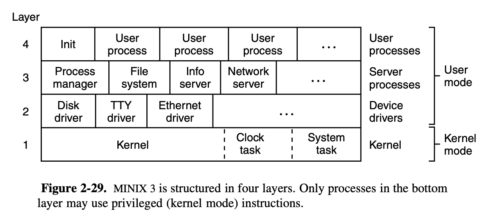

Operating Systems Design and Implementation Notes
4. Inside a Hole Clock Tick
By Jiawei Wang
We are now moving closer to looking at the actual code of Minix3. Unlike the introduction sequence in the original book. I divide the implementation into four parts:
- Clock Server (Inside a Hole Clock Tick)
- Process Scheduler
- Interprocess Commnuication
- System Task
Process management, Interprocess communication, and Scheduling
One useful website for learning minix3: elixir.ortiz.sh Minix3 Source code used in this note: https://github.com/Angold-4/OSDI/tree/master/Minix3 (folked from jncraton) Before the formal introduction with code, let us begin our study of MINIX 3 by taking a bird’s-eye view of the system. MINIX 3 is structured in four layers, with each layer performing a well-defined function. 
1. Clock Task
Clocks (also called timers) are essential to the operation of any timesharing system. In my opinion, The Clocks is the heart of a computer, so that it can make all components run regularly. Also, there are several places one could point to and say, "This is where Minix3 starts running".
Clock Hardware
The clock is built out of three components: a crystal oscillator, a counter, and a holding register.

- Crystal Oscillator:When a piece of quartz crystal is properly cut and mounted under tension, it can be made to generate a periodic signal of very high accuracy.
- Counter: The signal that crystal oscillator made is fed into the counter to make it count down to zero. When the counter gets to zero, it causes a CPU interrupt.
- Holding Register: After getting to zero and causing the interrupt, the holding register is automatically copied into the counter, and the whole process is repeated again indefinitely. These periodic interrupts are called clock ticks.
The advantage of the programmable clock is that its interrupt frequency can be controlled by software. If a 1-MHz crystal is used, then the counter is pulsed every microsecond. With 16-bit registers, interrupts can be programmed to occur at intervals from 1 microsecond to 65.536 milliseconds, which means the clock ticks can be changed by adjust the value of registers. The clock interrupts repeat 60 times a second as long as MINIX 3 runs.
Clock Software
All the clock hardware does is generate interrupts at known intervals. Everything else involving time must be done by the software, the clock driver. The exact duties of the clock driver vary among operating systems, but must include the following:
-
Maintaining the time of day. In Minix3, because the known-intervals-interrupts, we can maintain the time of the day by counting the ticks. but to do that relative to the time the system was booted, rather than relative to a fixed external moment.When the time of day is requested, the stored time of day is added to the counter to get the current time of day.
-
Preventing processes from running longer than they are allowed to. Whenever a process is started, the scheduler should initialize a counter to the value of that process’ quantum in clock ticks. At every clock interrupt, the clock driver decrements the quantum counter by 1. When it gets to zero, the clock driver calls the scheduler to set up another process.
2. Start of Minix3
The kernel/proc.h defines the process table of kernel.
Generally speaking, Minx3 runs from kernel/mpx386.s.
After execute cstart() function in kernel/start.c, which set some global variable and other preparations.
At line 252. after the assembly code: jmp main, it jumps to the main program of Minix3:
kernel/main.c
line 76 to 182: Loop theimage[], initialize the boot process table. Theimage[]is defined in the line 114 of kernel/table.c:
PUBLIC struct boot_image image[] = {
/* process nr, pc,flags, qs, queue, stack, traps, ipcto, call, name */
{IDLE, idle_task,IDL_F, 8, IDLE_Q, IDL_S, 0, 0, no_c,"idle" },
{CLOCK,clock_task,TSK_F, 8, TASK_Q, TSK_S, TSK_T, 0, no_c,"clock" },
{SYSTEM, sys_task,TSK_F, 8, TASK_Q, TSK_S, TSK_T, 0, no_c,"system"},
{HARDWARE, 0,TSK_F, 8, TASK_Q, HRD_S, 0, 0, no_c,"kernel"},
{PM_PROC_NR, 0,SRV_F, 32, 4, 0, SRV_T, SRV_M, c(pm_c),"pm" },
{FS_PROC_NR, 0,SRV_F, 32, 5, 0, SRV_T, SRV_M, c(fs_c),"vfs" },
{RS_PROC_NR, 0,SVM_F, 4, 4, 0, SRV_T, SYS_M, c(rs_c),"rs" },
{MEM_PROC_NR, 0,SVM_F, 4, 3, 0, SRV_T, SYS_M,c(mem_c),"memory"},
{LOG_PROC_NR, 0,SRV_F, 4, 2, 0, SRV_T, SYS_M,c(drv_c),"log" },
{TTY_PROC_NR, 0,SVM_F, 4, 1, 0, SRV_T, SYS_M,c(tty_c),"tty" },
{DS_PROC_NR, 0,SVM_F, 4, 4, 0, SRV_T, SYS_M, c(ds_c),"ds" },
{MFS_PROC_NR, 0,SVM_F, 32, 5, 0, SRV_T, SRV_M, c(fs_c),"mfs" },
{VM_PROC_NR, 0,VM_F, 32, 2, 0, SRV_T, SRV_M, c(vm_c),"vm" },
{INIT_PROC_NR, 0,USR_F, 8, USER_Q, 0, USR_T, USR_M, c(usr_c),"init" },
};
line 193 to 211: Return to the assembly code to start running the current process by callingrestart()Therestart()is defined from 436 to 469 of kernel/mpx386.s:
/*===========================================================================*/
/* restart */
/*===========================================================================*/
restart:
/* Restart the current process or the next process if it is set. */
cli
call schedcheck
movl proc_ptr, %esp /* will assume P_STACKBASE == 0 */
lldt P_LDT_SEL(%esp) /* enable process' segment descriptors */
cmpl $0, P_CR3(%esp)
jz 0f
mov P_CR3(%esp), %eax
cmpl loadedcr3, %eax
jz 0f
mov %eax, %cr3
mov %eax, loadedcr3
mov proc_ptr, %eax
mov %eax, ptproc
movl $0, dirtypde
0:
lea P_STACKTOP(%esp), %eax /* arrange for next interrupt */
movl %eax, tss+TSS3_S_SP0 /* to save state in process table */
restart1:
decb k_reenter
popw %gs
popw %fs
popw %es
popw %ds
popal
add $4, %esp /* skip return adr */
iret /* continue process */
Then the CPU will start to execute all boot processes that we initialized before (from 0)
3. Implementation of Clock Driver in Minix3
The Minix 3 clock driver is contained in the file kernel/clock.c.
From the boot image table:
{CLOCK,clock_task,TSK_F, 8, TASK_Q, TSK_S, TSK_T, 0, no_c,"clock" },
The CLOCK process has the highest piority (0), and it will be executed after the restart().
The kernel will run it by calling the clock_task() function.
/*===========================================================================*
* clock_task *
*===========================================================================*/
PUBLIC void clock_task()
{
/* Main program of clock task. If the call is not HARD_INT it is an error.
*/
message m; /* message buffer for both input and output */
int result; /* result returned by the handler */
init_clock(); /* initialize clock task */
/* Main loop of the clock task. Get work, process it. Never reply. */
while(TRUE) {
/* Go get a message. */
result = receive(ANY, &m);
if(result != OK)
minix_panic("receive() failed", result);
/* Handle the request. Only clock ticks are expected. */
if (is_notify(m.m_type)) {
switch (_ENDPOINT_P(m.m_source)) {
case HARDWARE:
do_clocktick(&m); /* handle clock tick */
break;
default: /* illegal request type */
kprintf("CLOCK: illegal notify %d from %d.\n",
m.m_type, m.m_source);
}
}
else {
/* illegal request type */
kprintf("CLOCK: illegal request %d from %d.\n",
m.m_type, m.m_source);
}
}
}
The clock_task() is also known as Clock Driver.First, it has a main loop, which waiting for a message from the HARD_INT, and then call do_clocktick().
Before trying to understand the execution of the Clock Driver, let's jump to the first command of the clock_task():
The init_clock() function.
/*===========================================================================*
* init_clock *
*===========================================================================*/
PRIVATE void init_clock()
{
/* First of all init the clock system.
*
* Here the (a) clock is set to produce a interrupt at
* every 1/60 second (ea. 60Hz).
*
* Running right away.
*/
arch_init_clock(); /* architecture-dependent initialization. */
/* Initialize the CLOCK's interrupt hook. */
clock_hook.proc_nr_e = CLOCK;
put_irq_handler(&clock_hook, CLOCK_IRQ, clock_handler);
enable_irq(&clock_hook); /* ready for clock interrupts */
/* Set a watchdog timer to periodically balance the scheduling queues. */
balance_queues(NULL); /* side-effect sets new timer */
}
Inside the function init_clock(). It is very important to understand these two statements:
put_irq_handler(&clock_hook, CLOCK_IRQ, clock_handler); // put_irq_handler: register an interrupt handler
enable_irq(&clock_hook); /* ready for clock interrupts */
From its name, it has some relationship with interrupt request (IRQ).
Interrupt Request (IRQ)
Details of interrupt hardware are system dependent, but any system must have elements functionally equivalent to those to be described for systems with 32-bit Intel CPUs. Interrupts generated by hardware devices are electrical signals and are handled in the first place by an interrupt controller, an integrated circuit that can sense a number of such signals and for each one generate a unique data pattern on the processor’s data bus.
This is necessary because the processor itself has only one input for sensing all these devices, and thus cannot differentiate which device needs service. PCs using Intel 32-bit processors are normally equipped with two such controller chips. Each can handle eight inputs, but one is a slave which feeds its output to one of the inputs of the master, so fifteen distinct external devices can be sensed by the combination, as shown in Fig. 2-39. Some of the fifteen inputs are dedicated; the clock input, IRQ 0, for instance, does not have a connection to any socket into which a new adapter can be plugged. Others are connected to sockets and can be used for whatever device is plugged in.

The code of interrupt controller is in the kernel/mpx386.s, from line 255 to 368.
/*===========================================================================*/
/* hwint00 - 07 */
/*===========================================================================*/
/* Note this is a macro, it just looks like a subroutine. */
#define hwint_master(irq) \
call save /* save interrupted process state */;\
push $irq ;\
call irq_handle /* irq_handle(irq) */;\
pop %ecx ;\
movb $END_OF_INT, %al ;\
outb $INT_CTL /* reenable master 8259 */;\
ret /* restart (another) process */
/* Each of these entry points is an expansion of the hwint_master macro */
.balign 16
hwint00:
/* Interrupt routine for irq 0 (the clock). */
hwint_master(0)
Remember the Clock Hardware we metioned at the begining of this note?
As soon as (or, more accurately, 16.67 milliseconds after) init_clock() runs, the first clock interrupt occurs, and clock interrupts repeat 60 times a second as long as Minix 3 runs.
-
The CPU disables all interrupts when it receives an interrupt.
-
For the clock interrupt (IRQ0), which is hard wired to the chip that generates clock signals with no possibility of any other device triggering this IRQ. It send a interrupt to 8259 interrupt chip every 16.67 milliseconds.
-
Once the chip get that interrupt, it will expanded the marco
hwint_master(0)and execute the assembly code.
hwint_master(0)
save() is in kernel/mpx386.s from line 369 to 400.
Which is to save the context of the interrupted process on the stack provided by the CPU.
/*===========================================================================*/
/* save */
/*===========================================================================*/
/*
* Save for protected mode.
* This is much simpler than for 8086 mode, because the stack already points
* into the process table, or has already been switched to the kernel stack.
*/
.balign 16
save:
cld /* set direction flag to a known value */
pushal /* save "general" registers */
pushw %ds /* save ds */
pushw %es /* save es */
pushw %fs /* save fs */
pushw %gs /* save gs */
mov %ss, %dx /* ss is kernel data segment */
mov %dx, %ds /* load rest of kernel segments */
mov %dx, %es /* kernel does not use fs, gs */
mov %esp, %eax /* prepare to return */
incb k_reenter /* from -1 if not reentering */
jne set_restart1 /* stack is already kernel stack */
mov $k_stktop, %esp
push $restart /* build return address for int handler */
xor %ebp, %ebp /* for stacktrace */
jmp *RETADR-P_STACKBASE(%eax)
.balign 4
set_restart1:
push $restart1
jmp *RETADR-P_STACKBASE(%eax)
On line 389: mov %esp, %eax /* prepare to return */
It move the value of return address (the addr that push into stack when call save() inside hwint_master() function to register %eax. so that it can return back to the hwint_master() after executing the jmp at the end of save().
line 393 push $restart Is a brilliant idea. It make sure that after the hwint_master() return, it will call the restart() to execute the process which pc is next_ptr.
After save() return and back to hwint_master(0), It will execute call irq_handle to call the function irq_handle(irq), which scans a linked list of structures that hold, among other things, addresses of functions to be called to handle an interrupt for a device, and the process numbers of the device drivers. It is a linked list because a single IRQ line may be shared with several devices. The handler for each device is supposed to test whether its device actually needs service.
PUBLIC void irq_handle(hook)
irq_hook_t *hook;
{
/* Call the interrupt handlers for an interrupt with the given hook list.
* The assembly part of the handler has already masked the IRQ, reenabled the
* controller(s) and enabled interrupts.
*/
/* Call list of handlers for an IRQ. */
while (hook != NULL) {
/* For each handler in the list, mark it active by setting its ID bit,
* call the function, and unmark it if the function returns true.
*/
irq_actids[hook->irq] |= hook->id;
if ((*hook->handler)(hook)) irq_actids[hook->irq] &= ~hook->id; // execute the handler function
hook = hook->next;
}
/* The assembly code will now disable interrupts, unmask the IRQ if and only
* if all active ID bits are cleared, and restart a process.
*/
}
#if _WORD_SIZE == 2
As I metioned before, the IRQ0 is only used for Clock Interrupt, so after execute put_irq_handler(&clock_hook, CLOCK_IRQ, clock_handler); in init_clock(). Every 16.67 milliseconds when clock sent a Clock IRQ to the hwint_master(0), it will call intr_handle(CLOCK), which will call clock_handler() function -- which probably runs more frequently than any other part of the MINIX 3 system.
clock_handler()
To improve the reading experience, I just list two key points of this function, if you want to read the full code. Please check kernel/clock.c from line 179 to 265.
- Update the ticks of running process Update counters that register how much of the quantum of the current process has been used and how much total time the current process has used.
/* Get number of ticks and update realtime. */
ticks = lost_ticks + 1;
lost_ticks = 0;
realtime += ticks;
/* Update user and system accounting times. Charge the current process for
* user time. If the current process is not billable, that is, if a non-user
* process is running, charge the billable process for system time as well.
* Thus the unbillable process' user time is the billable user's system time.
*/
proc_ptr->p_user_time += ticks;
if (priv(proc_ptr)->s_flags & PREEMPTIBLE) {
proc_ptr->p_ticks_left -= ticks;
}
if (! (priv(proc_ptr)->s_flags & BILLABLE)) {
bill_ptr->p_sys_time += ticks;
bill_ptr->p_ticks_left -= ticks;
}
- If the interrupt handler detects that a process has used its quantum or that a timer has expired.
It send a message to the Clock Driver which waiting for this HARD_INT message. (
clock_task())
if ((next_timeout <= realtime) || (proc_ptr->p_ticks_left <= 0) || expired) {
prev_ptr = proc_ptr; /* store running process */
mini_notify(proc_addr(HARDWARE), CLOCK); /* send notification */
}
do_clocktick()
When the Clock Driver (clock_task()) recieve the messeage from mini_notify(), it will call do_clocktick() to pick a process to run next.
The full code of do_clocktick() is in kernel/clock.c from line 101 to 154. Also, I only pick a piece of code segment.
/* A process used up a full quantum. The interrupt handler stored this
* process in 'prev_ptr'. First make sure that the process is not on the
* scheduling queues. Then announce the process ready again. Since it has
* no more time left, it gets a new quantum and is inserted at the right
* place in the queues. As a side-effect a new process will be scheduled.
*/
if (prev_ptr->p_ticks_left <= 0 && priv(prev_ptr)->s_flags & PREEMPTIBLE) {
dequeue(prev_ptr); /* take it off the queues */
enqueue(prev_ptr); /* and reinsert it again */
}
The dequeue() and enqueue() function is a part of the System Components called System Scheduler.Which will be introduced in the next note. The only thing you need to know is that it will schedule a new process to run by updating the next_ptr so that after the clock_hander() finished and return to hwint_master(0), when hwint_master(0) return, it will call the restart() function(stack), a process which pc is next_ptr will be called.
And that is what happend in 16.67 milliseconds of a CPU - A Clock Tick.